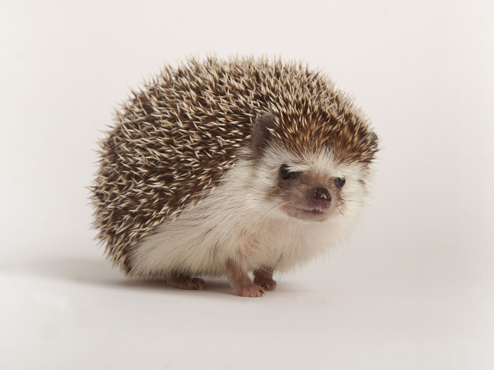

Shaymin
Shaymin, the Gratitude Pokemon, is a Grass type that resembles a hedgehog in its land form. It lives in fields of flowers and camouflages by curling itself up.

Hedgehog
Hedgehogs are native to Europe, Asia, and Africa. They are small mammals covered in spines made of keratin. They roll into tight balls in self defense. Forest hedgehogs are prey to birds, badgers, and ferrets. They’re primarily nocturnal and are omnivores, eating insects, frogs, berries, and other foods.